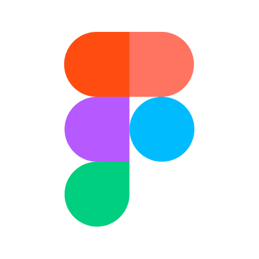
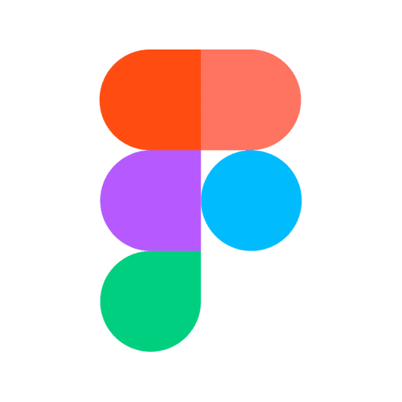

La Ludomaker Game Jam s’est déroulée pendant ma licence professionnelle "Métiers du Jeu Vidéo". L'objectif de cette Game Jam était de créer un jeu de société en 5 jours, avec pour thème "The more you have, the worse it gets" ("Plus tu en as, pire c'est"). En collaboration avec Kieran Mignon et Rayan Madouni, nous avons conçu le jeu de société intitulé "Sick Game". Le thème principal du jeu était les maladies. L'objectif était d'avoir le moins de points à la fin de la partie en se débarrassant de nos maladies les plus graves. Une partie se terminait lorsque nous atteignions le nombre de tours fixé en début du jeu.
Le jeu comprend un compteur de tours, un jeton et des cartes de jeu. Les cartes sont divisées en quatre groupes principaux, chacun avec sa propre couleur : les cartes État, les cartes Maladie, les cartes Médicament, et les cartes Action. Les cartes État sont distribuées au début du jeu et confèrent des bonus ou des pénalités tout au long de la partie.
Les cartes Maladie affichent un nombre en haut à gauche, correspondant à la gravité de la maladie et utilisé pour compter les points à la fin de la partie. Certaines maladies appartiennent à des familles spécifiques comme les Virus, les MST, et les maladies liées aux selles. Il existe également quatre maladies incurables qui infligent des malus aux joueurs, comme une pioche forcée, une obligation de défausser, l'impossibilité de jouer ou des cartes cachées.
Les cartes Médicament sont utilisées à la fin de la partie pour soigner une maladie. Elles peuvent également guérir plusieurs maladies à la fois si plusieurs cartes de la même famille sont en main.
Les cartes Action peuvent être jouées à la fin de chaque tour pour influencer la partie.
Elles permettent par exemple de faire piocher un adversaire, de défausser certaines maladies, ou de changer le sens du jeu.
Sick Game est un jeu d'ambiance, avec des références à la pop culture et une dose d'humour noir.
Logiciels utilisés :

 

Une partie commence par la distribution des cartes aux joueurs, suivie par la mise en place de la pioche et de la carte compte-tour sur la zone de jeu. Chaque joueur doit poser face visible une carte de maladie incurable s’il en possède une.
Ensuite, les cartes État sont distribuées et posées face visible devant chaque joueur. Le premier joueur est celui qui a été malade le plus récemment.
Pour gagner la partie, il faut avoir le moins de points possible à la fin du jeu. À chaque tour, les joueurs commencent en piochant une carte. Ils peuvent ensuite choisir entre jouer une carte Action, défausser une carte (sauf une carte de maladie incurable) et piocher deux nouvelles cartes, ou transférer une carte aléatoire au joueur suivant (y compris une maladie). Les cartes sont placées face cachée, et le joueur suivant choisit celle qu’il souhaite récupérer. Une fois que chaque joueur a terminé ses actions, le jeton est déplacé sur la carte compte-tour, et le tour suivant commence. La partie se termine après six tours, mais il est possible de jouer plus longtemps si on le souhaite. Le joueur avec le moins de points gagne la partie.
À la fin, les joueurs retournent leurs cartes face visible et additionnent les points indiqués sur les cartes de maladie, en tenant compte de leurs cartes État et de leurs cartes Médicament. Si une nouvelle partie est lancée, le joueur ayant obtenu le plus de points devient le premier joueur.